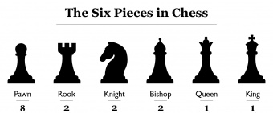

Chess Book
Chess Book
Pieces in chess!

The Pawn
The pawn (♙, ♟) is the most numerous and weakest piece in the game of chess. It may move one square directly forward, it may move two squares directly forward on its first move, and it may capture one square diagonally forward. Each player begins a game with eight pawns, one on each square of their second rank. The white pawns start on a2 through h2; the black pawns start on a7 through h7.
The Rook
The rook (♖, ♜) is a piece in the game of chess. It may move any number of squares horizontally or vertically without jumping, and it may capture an enemy piece on its path; additionally, it may participate in castling. Each player starts the game with two rooks, one in each corner on their own side of the board.
The Knight
The knight (♘, ♞) is a piece in the game of chess, represented by a horse's head and neck. It moves two squares vertically and one square horizontally, or two squares horizontally and one square vertically, jumping over other pieces. Each player starts the game with two knights on the b- and g-files, each located between a rook and a bishop.
The Bishop
The bishop (♗, ♝) is a piece in the game of chess. It moves and captures along diagonals without jumping over intervening pieces. Each player begins the game with two bishops. The starting squares are c1 and f1 for White's bishops, and c8 and f8 for Black's bishops.
The Queen
The queen (♕, ♛) is the most powerful piece in the game of chess. It can move any number of squares vertically, horizontally or diagonally, combining the powers of the rook and bishop. Each player starts the game with one queen, placed in the middle of the first rank next to the king. Because the queen is the strongest piece, a pawn is promoted to a queen in the vast majority of cases.
The King
The king (♔, ♚) is the most important piece in the game of chess. It may move to any adjoining square; it may also perform, in tandem with the rook, a special move called castling. If a player's king is threatened with capture, it is said to be in check, and the player must remove the threat of capture immediately. If this cannot be done, the king is said to be in checkmate, resulting in a loss for that player. A player cannot make any move that places their own king in check. Despite this, the king can become a strong offensive piece in the endgame or, rarely, the middlegame.
Best openings in chess for beginners:
#1 The Italian Game
The Italian game begins with 1.e4 e5 2.Nf3 Nc6 3.Bc4. The point is to control the center quickly with your pawn and knight and then put your bishop on its most dangerous square. You are also preparing to castle to safety.
#2 The Sicilian Defense
The Sicilian Defense is the most popular choice of aggressive players with the black pieces. Often White will play 2.Nf3 and 3.d4 which will gain central space, but it allows Black to benefit by exchanging a central pawn for a bishop's pawn.
#3 The French Defense
The French Defense is one of the first strategic openings every chess player should learn. After e5 (now or later), both sides will have pawn chains. One risk of the French Defense is that the c8-bishop can be very hard to develop.
#4 The Ruy-Lopez
The Ruy Lopez is one of the oldest and most classic of all openings. It is named after a Spanish bishop who wrote one of the first books on chess. The Ruy Lopez attacks the knight which defends the e5-pawn. White hopes to use this attack to build more pressure on Black's central pawn.
#5 The Slav Defense
The Slav Defense is a very solid opening which defends the d5-pawn with another pawn. Most of Black's pieces can develop to natural squares, but Black will usually have a little less space and will have to find a good place for their b8-knight.